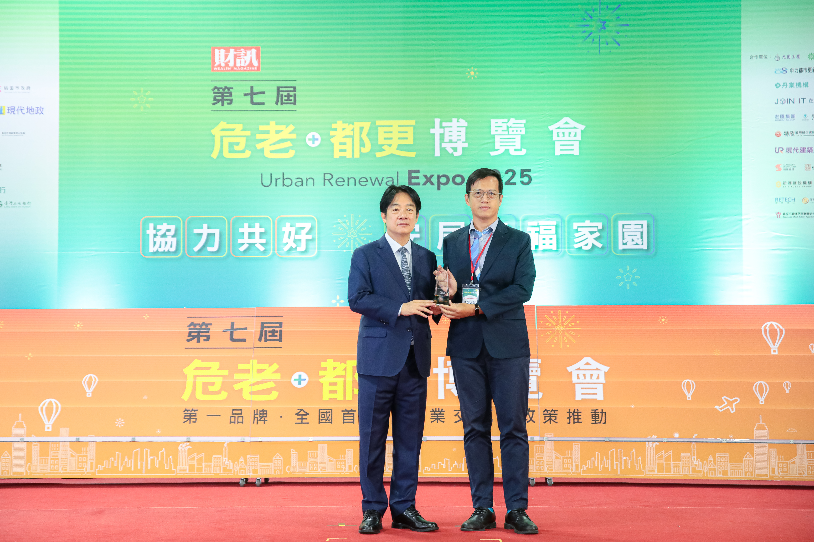
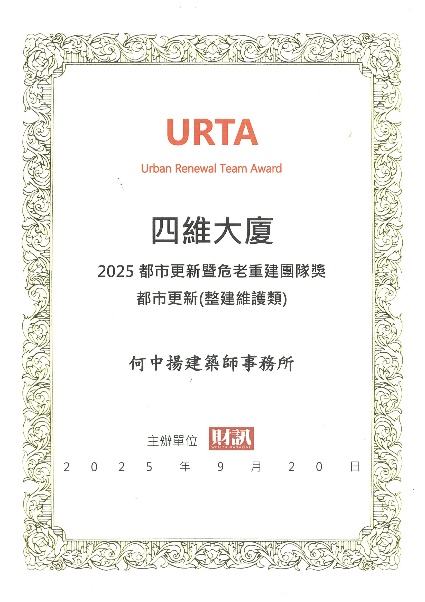

建築的開始，往往不是造型，而是一個真實的需求：一塊土地如何被理解、一棟老屋如何延續、 一個家庭或事業如何在空間中找到新的秩序。
我們希望成為業主可信任的整合者，在設計、法規、申請、工程與使用管理之間建立清楚的路徑。 透過專業判斷與務實溝通，讓複雜的條件被整理，讓想像可以逐步落地。
About
何中揚建築師事務所與宇邑空間設計，專注於建築設計、法規判斷、室內整合與工程執行。 我們相信好的建築服務，不只是一張圖面，而是能協助業主看懂限制、整合資源，並讓每一步都能穩定往前。
Architect's Note
Team
處理土地開發評估、建築規劃、建照使照、公共工程與各類建築法規介面。
由宇邑空間設計協作，整合生活尺度、材料細節、室內裝修許可與施工界面。
支援老屋延壽、公安申報、廣告物申請、變更使用與其他建管實務判斷。
Milestones
以四維大廈整建維護類案例，獲財訊雜誌肯定都市更新與危老重建領域的專業團隊協作。


從住宅、商業空間、公共工程到宗教建築，建立跨類型的設計與執行經驗。
將中央法規、台中市地方法規、建管實務與常用表單整理成可持續更新的網站架構。